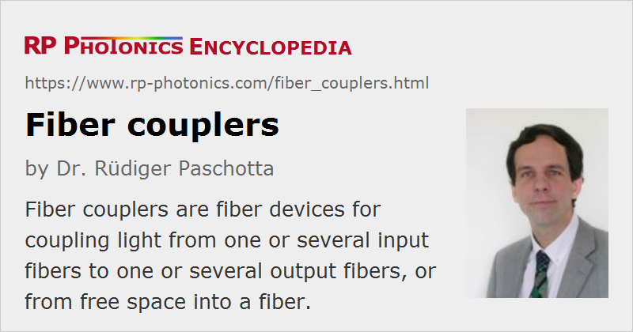

Fiber Couplers
Definition: fiber devices for coupling light from one or several input fibers to one or several output fibers, or from free space into a fiber
German: Faserkoppler
Categories: fiber optics and waveguides, photonic devices
How to cite the article; suggest additional literature
Author: Dr. Rüdiger Paschotta
Fiber couplers belong to the basic components of many fiber-optic setups. Note that the term fiber coupler is used with two different meanings:
- It can be an optical fiber device with one or more input fibers and one or several output fibers. Light from an input fiber can appear at one or more outputs, with the power distribution potentially depending on the wavelength and polarization.
- It can also be a device for coupling (launching) light from free space into a fiber.
This article treats fiber couplers of the first type, coupling light from fibers to fibers. Such couplers can be fabricated in different ways:
- Two or more fibers can be thermally tapered and fused so that their cores come into intimate contact over some length of a few centimeters, for example. This can also be done with polarization-maintaining fibers, leading to polarization-maintaining couplers (PM couplers) or splitters.
- Some couplers use side-polished fibers, providing access to the fiber core.
- There are fiber-optic pump combiners and pump–signal combiners, which usually work with multimode pump fibers.
- There are planar lightwave circuits, containing things like branching waveguides, with fibers coupled to the inputs and outputs.
- Couplers can also be made from bulk optics, for example in the form of microlenses and beam splitters, which can be coupled to fibers (“fiber pig-tailed”).
Figure 2 shows a numerical beam propagation simulation for a fiber coupler based of the first type as explained above. Here, the light distribution oscillates between the two fiber cores, and finally the larger part of the power remains in the original (upper) fiber. For light with other wavelengths, however, the coupling can be very different. Therefore, such couplers work only in a limited optical bandwidth. They can be used as dichroic couplers or beam combiners, for example for separating or combining two wavelength components (such as pump and signal light in a fiber amplifier).
Fiber couplers are usually directional couplers, which means that essentially no optical power sent into some input port can go back into one of the input ports. There is often a specification of return loss, which indicates how much weaker the back-reflected light is, compared with the input.
Limitations for Fiber Combiners
Coupling Loss
If all fibers involved are single-mode (i.e., support only a single mode per polarization direction for a given wavelength), there are certain physical restrictions on the performance of the coupler. In particular, it is not possible to combine two or more inputs of the same optical frequency into a single-polarization output without significant excess losses, except if the optical phases of the input beams are precisely adjusted and stabilized. That means that the two inputs to be combined would have to be mutually coherent.
However, such a restriction does not occur for different input wavelengths: there are couplers which can combine two inputs at different wavelengths into one output without exhibiting significant losses. Such dichroic couplers are used in fiber amplifiers to combine the signal input and the pump wave. Their insertion loss may be very small (e.g. far below 1 dB) for both inputs. Other wavelength-sensitive couplers are used as multiplexers in wavelength division multiplexing (WDM) telecom systems to combine several input channels with different wavelengths, or to separate channels.
Multimode fiber combiners allow the powers of two mutually incoherent beams to be combined without a power loss. However, this will cause some loss of brightness.
Bandwidth
Most types of couplers work only in a limited range of wavelength (a limited bandwidth), since the coupling strength is wavelength-dependent (and often also polarization-dependent). This is a typical property of those couplers where the coupling occurs over a certain length. Typical bandwidths of fused couplers are a few tens of nanometers. As mentioned above, they can be used as dichroic couplers or beam combiners. They are sometimes also called WDM couplers (→ wavelength division multiplexing).
Typical Applications
Some typical applications of fiber couplers are:
- In a cable TV system, the powerful signal from one transmitter is sent in to a fiber splitter, which distributes the power over a large number of output fibers for different customers.
- Fiber couplers can be used in fiber interferometers, for example for optical coherence tomography (OCT). Specially designed broadband couplers are often required for such purposes.
- Within the resonator of a fiber laser, a dichroic fiber coupler can be used to inject pump light, and another fiber coupler can be used as the output coupler. This technique is used particularly in fiber ring lasers, having no resonator ends where light could be injected.
- In fiber amplifiers and lasers, dichroic couplers are often used for injecting pump light or eliminating residual pump light from the signal output.
- In high-power fiber lasers and amplifiers, multimode fiber couplers are often used for combining the radiation of several laser diodes and sending them into inner cladding of the active fiber (a double-clad fiber).
Suppliers
The RP Photonics Buyer's Guide contains 88 suppliers for fiber couplers. Among them:
Questions and Comments from Users
Here you can submit questions and comments. As far as they get accepted by the author, they will appear above this paragraph together with the author’s answer. The author will decide on acceptance based on certain criteria. Essentially, the issue must be of sufficiently broad interest.
Please do not enter personal data here; we would otherwise delete it soon. (See also our privacy declaration.) If you wish to receive personal feedback or consultancy from the author, please contact him e.g. via e-mail.
By submitting the information, you give your consent to the potential publication of your inputs on our website according to our rules. (If you later retract your consent, we will delete those inputs.) As your inputs are first reviewed by the author, they may be published with some delay.
Bibliography
| [1] | R. Paschotta, tutorial on "Passive Fiber Optics", Part 8: Fiber Couplers |
| [2] | R. Paschotta, case study on a directional fiber coupler |
See also: fibers, fiber optics, fiber-optic pump combiners, dichroic mirrors, beam splitters, insertion loss, return loss
and other articles in the categories fiber optics and waveguides, photonic devices
|  |
If you like this page, please share the link with your friends and colleagues, e.g. via social media:
These sharing buttons are implemented in a privacy-friendly way!